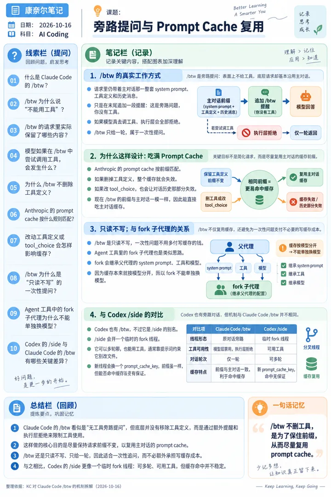
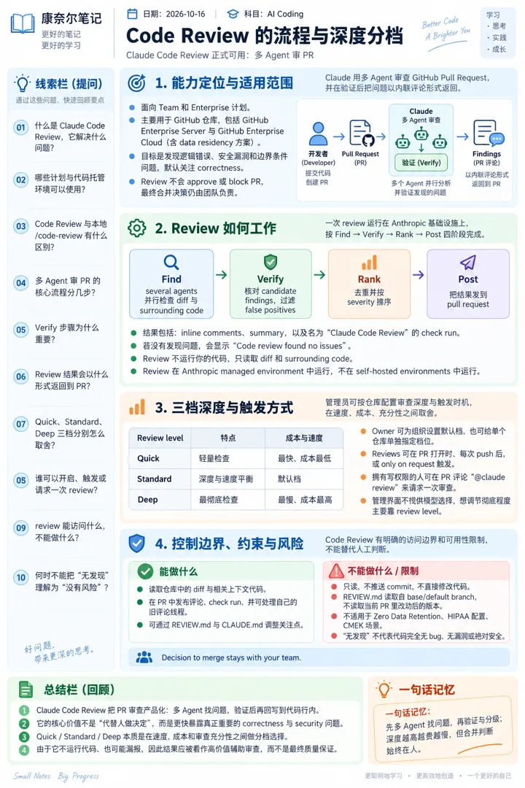
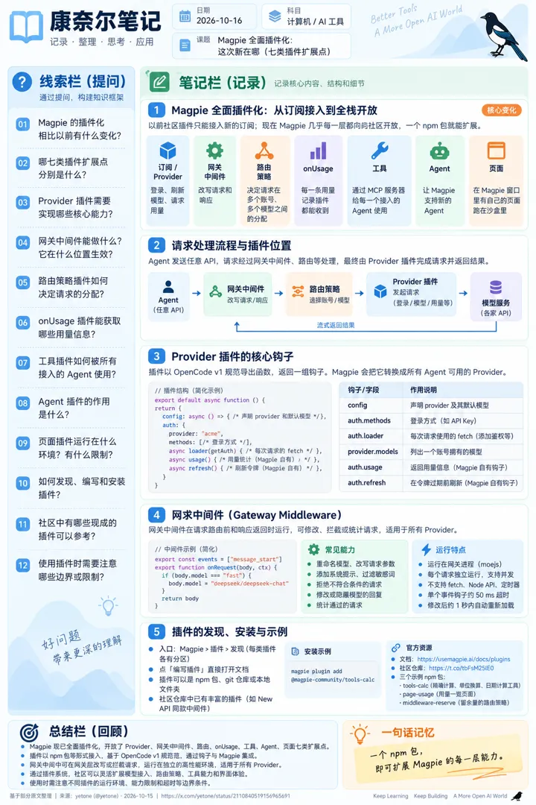
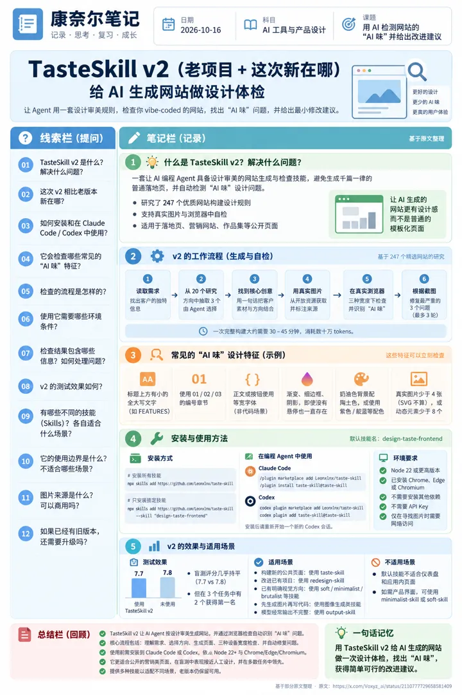
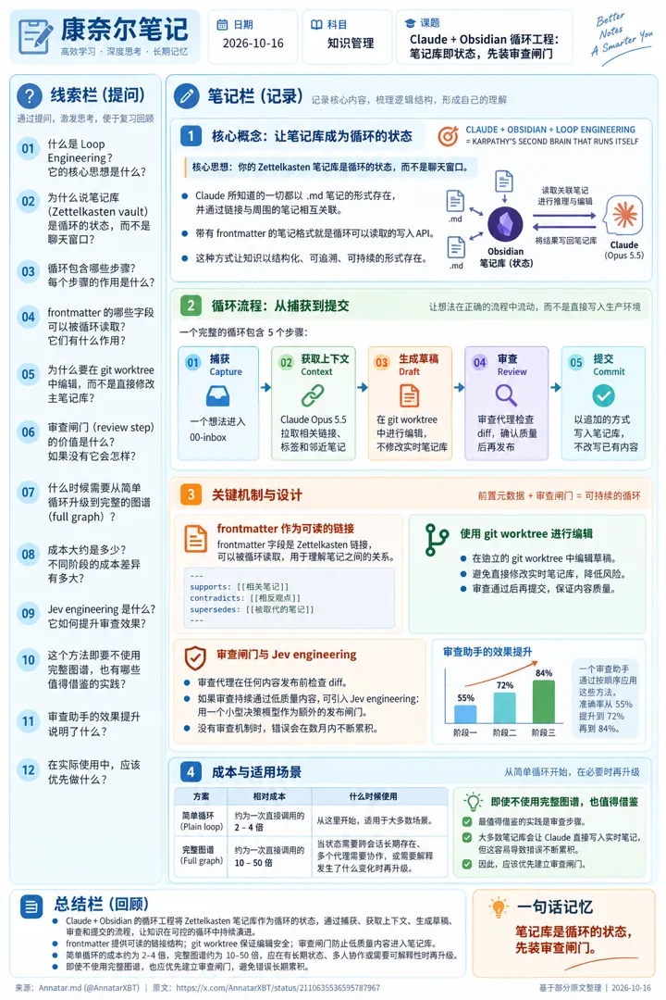

6 张技术海报
点海报看原图；每张右侧是 X 原帖信息（时间为美东 ET）。

#1 · X 原帖信息
Claude Code /btw 拆解：旁路提问如何复用 prompt cache
KC @ScarletKc
发帖时间：2026-10-15 10:44 ET
原帖：https://x.com/ScarletKc/status/2110743554486423802
发帖时间：2026-10-15 10:44 ET
原帖：https://x.com/ScarletKc/status/2110743554486423802
研究了一下 Claude Code 的 /btw。这个旁路提问是不能用工具的，但它其实没有把工具从请求里拿掉。 请求里还是主对话那一整套 system prompt、工具定义和历史消息，只在最后追加一段提醒，告诉模型这是旁路问题，你没有工具。模型真去调工具的话，执行层会全部拒绝，也只给一轮。 这么绕是为了缓存。Anthropic 的 prompt cache 按前缀匹配，删掉工具定义整个缓存就失效了，改 tool_choice 也会让对话历史那部分失效。现在前缀和主对话一模一样，btw 能直接吃主对话的缓存，还是只读不写，一次性的问题不用多付写缓存的钱。 Agent 工具里的 fork 子代理也是这个思路，system prompt、工具、模型全部继承父代理。所以 fork 不能单独换模型，缓存本来就是按模型分开的。 Codex 也有 /btw，不过它是 /side 的别名，会开一个临时的 fork 线程。可以多轮聊，也能用工具，靠提示词约束它别改文件。这个新线程还会换一个 prompt_cache_key，前缀虽然一样，能不能命中缓存就没保证了。
#2 · X 原帖信息
Open Claude UI：Claude 桌面端 UI 逆向拆解与开源组件
Kxians @xulijian1994
发帖时间：2026-10-15 00:34 ET
原帖：https://x.com/xulijian1994/status/2110590027453669498
原文链接：https://github.com/Caho1/open-claude-ui
发帖时间：2026-10-15 00:34 ET
原帖：https://x.com/xulijian1994/status/2110590027453669498
原文链接：https://github.com/Caho1/open-claude-ui
有人把 Claude 桌面客户端的 UI 几乎扒了个底朝天，还直接开源了。 项目叫 Open Claude UI，利用 REA 逆向工程框架，对 Claude 桌面端进行了深度拆解。 最有价值的不是复刻了 Claude 的外观，而是连背后的交互逻辑和动效算法都研究了一遍。 项目包含： 1. 30 个独立 React 组件，基本可以直接拿来用 2. 8 项核心交互算法，包括弹簧动画、滚动渐隐、图片缩放等 3. 3000 多行逆向分析文档，覆盖 31 个技术小节 4. Claude 风格的聊天输入框、模型切换器、MCP 授权卡片 5. macOS 毛玻璃效果、侧边栏拖拽、Cowork 多 Agent 协作界面 甚至连中文输入法按回车误发送、AI 输出时自动滚动抢屏幕这种细节，都有对应的实现方案。 我觉得这个项目真正值得收藏的，其实是那份逆向分析文档。 对于想开发 AI 客户端、Agent 工作台或者 Claude 风格产品的开发者来说，相当于有人把一套成熟产品的前端设计思路和交互细节整理成了开源教材。 以后想做一个有 Claude 那种质感的 AI 产品，确实可以少走不少弯路。 项目地址： https://t.co/bgbicb26xr

#3 · X 原帖信息
Claude Code Review 正式可用：多 Agent 审 PR 的流程与三档深度
ClaudeDevs @ClaudeDevs
发帖时间：2026-10-15 18:51 ET
原帖：https://x.com/ClaudeDevs/status/2110866210573386065
原文链接：https://code.claude.com/docs/en/code-review
发帖时间：2026-10-15 18:51 ET
原帖：https://x.com/ClaudeDevs/status/2110866210573386065
原文链接：https://code.claude.com/docs/en/code-review
Code Review is now generally available for Claude Team and Enterprise plans. Reviews are now faster, catch more of the bugs that matter, and admins can pick from Quick, Standard, or Deep review levels for each repo. https://t.co/RO4tDC4U1U

#4 · X 原帖信息
Magpie 全面插件化：这次新在哪（七类插件扩展点）
yetone @yetone
发帖时间：2026-10-15 17:09 ET
原帖：https://x.com/yetone/status/2110840519156965691
原文链接：https://usemagpie.ai/docs/plugins
发帖时间：2026-10-15 17:09 ET
原帖：https://x.com/yetone/status/2110840519156965691
原文链接：https://usemagpie.ai/docs/plugins
Magpie 现在全面插件化了 🧩 以前社区插件只能接入新的订阅；现在 Magpie 自己的几乎每一层都向社区开放，一个 npm 包就能扩展： • 订阅 / Provider：登录、刷新、模型、请求、用量全由插件负责 • 网关中间件：改写经过 Magpie 的请求和响应 • 路由策略：自己决定请求怎么在多个账号、多个模型之间分配 • onUsage：每一条用量记录插件都能收到 • 工具：插件写的工具通过 Magpie 的 MCP 服务器，给每一个接入的 Agent 用 • Agent：让 Magpie 支持一个新的 Agent • 页面：插件在 Magpie 窗口里有自己的页面，跑在沙盒里 入口：Magpie › 插件 › 发现，每类插件各有分区；点「编写插件」直接打开文档。 文档：https://t.co/ckQuIZlQAs 社区仓库：https://t.co/tbFsM25lE0 三个示例已经发到 npm：tools-calc（精确计算、单位换算、日期计算工具）、page-usage（用量一览页面）、middleware-reserve（留余量的路由策略）。 magpie plugin add @magpie-community/tools-calc 一行装好。来写插件吧 👇

#5 · X 原帖信息
TasteSkill v2（老项目 + 这次新在哪）：给 AI 生成网站做设计体检
老项目 + 这次新在哪：见海报
Vox @Voxyz_ai
发帖时间：2026-10-15 13:00 ET
原帖：https://x.com/Voxyz_ai/status/2110777729658581409
原文链接：https://github.com/Leonxlnx/taste-skill
发帖时间：2026-10-15 13:00 ET
原帖：https://x.com/Voxyz_ai/status/2110777729658581409
原文链接：https://github.com/Leonxlnx/taste-skill
Highly recommend installing the new TasteSkill v2 in Claude Code or Codex, then having Opus 5.5 use it to 𝗴𝗶𝘃𝗲 𝘁𝗵𝗲 𝘀𝗶𝘁𝗲 𝘆𝗼𝘂 𝘃𝗶𝗯𝗲-𝗰𝗼𝗱𝗲𝗱 𝗮 𝗰𝗵𝗲𝗰𝗸𝘂𝗽. It came out two days ago. It opens your pages at desktop, tablet and phone widths and lists every AI-website tell they hit. A few on the list you can check right away: → A small all-caps line above the headline, like FEATURES → Sections numbered 01 / 02 / 03 → Monospace body text and buttons, anywhere outside code → Gradients, hairline borders, and shadows that sit there even without hover → Cream backgrounds with terracotta, or any violet or indigo…

#6 · X 原帖信息
Claude + Obsidian 循环工程：笔记库即状态，先装审查闸门
Annatar.md @AnnatarXBT
发帖时间：2026-10-15 03:35 ET
原帖：https://x.com/AnnatarXBT/status/2110635536595787967
发帖时间：2026-10-15 03:35 ET
原帖：https://x.com/AnnatarXBT/status/2110635536595787967
CLAUDE + OBSIDIAN + LOOP ENGINEERING = KARPATHY'S SECOND BRAIN THAT RUNS ITSELF the core idea: your Zettelkasten vault is the loop's state, not the chat window everything Claude knows lives in a .md note, linked to the ones around it the loop: > capture - a thought lands in 00-inbox > context - Claude Opus 5.5 pulls links, tags, and neighbouring notes > draft - edits happen inside a git worktree, never the live vault > review - a critic agent checks the diff before anything ships > commit - appended to the vault, nothing gets rewritten the key insight: frontmatter fields like supports, con…
王玮的 X 海报日报 · 每天从 X 推荐流挑技术帖，用 ChatGPT 生成康奈尔笔记海报 · 每张都附 X 原帖信息 · 风格改编自 VitePress（MIT）